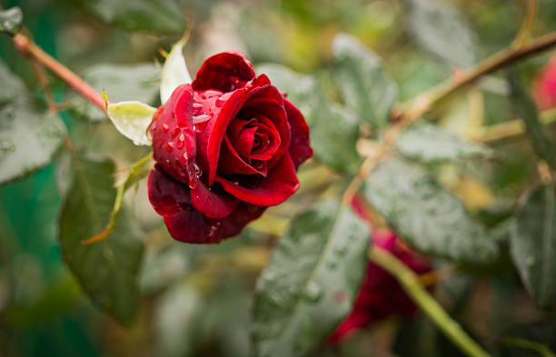

Garden roses are predominantly hybrid roses that are grown as ornamental plants in private or public gardens. They are one of the most popular and widely cultivated groups of flowering plants, especially in temperate climates. An enormous number of garden cultivars have been produced, especially over the last two centuries, though roses have been known in the garden for millennia beforehand. While most garden roses are grown for their flowers, often in dedicated rose gardens, some are also valued for other reasons, such as having ornamental fruit, providing ground cover, or for hedging.
Classification of modern roses can be quite confusing because many modern roses have old garden roses in their ancestry and their form varies so much. The classifications tend to be by growth and flowering characteristics. The following includes the most notable and popular classifications of Modern Garden Roses: